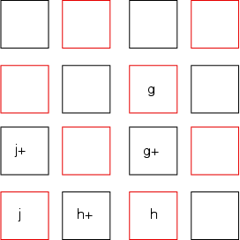
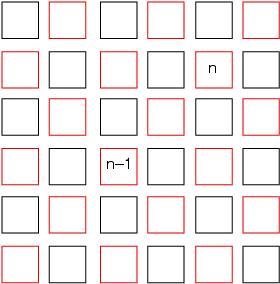

1. Yes, leave a black square empty next to (say, in a clockwise direction) every empty red square in the same concentric square. When Red places a piece on a square, place a piece having a number one higher in the next empty position in a clockwise direction unless the piece just placed is already covered by another black piece. In Figure 1, Red piece h is covered by h+ (usually h+1), Red piece j is covered by j+, and g is covered by g+. Because every square having 2n squares is even on all sides, this assures dominance by Black.

Figure 12. No fixed k works. To see why, call two red squares (i,j) and (i',j') well separated if they share no black squares as neighbors and each has four black squares as neighbors.

Figure 2In Figure 2, n and n-1 are well separated. Consider a collection of well separated red squares and put the highest red pieces on them. The red square having n on it must have two black pieces neighboring it having numbers greater than n on them. The red square having n-1 on it may have a black piece with n on it, but also another one greater than n. Each well-separated red square must, therefore, consume a black piece value greater than n. Note that the diagonals containing well-separated red squares (i) alternate between well-separated red squares and others; and (ii) must be surrounded by diagonals of red squares that have no well-separated red squares. Therefore, the number of well-separated red squares increases with n/4. Black must use n/2 pieces to cover those, half of those (n/4) must be greater than n and the others must be at least 3n/4. So, these n/2 black pieces must have greater values than any other red pieces. We call those black pieces the high dominators. Further, Black can arrange it so that every empty red square is the neighbor of at least one high dominator. So any piece put on an empty (not well separated) red square can be covered by the high dominator already placed as a neighbor plus one other black piece having a value less than n. Therefore, k is c+n/4, where c is a small constant independent of n. In fact, I conjecture that c is about 2.
DDJ
Back to Article